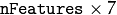
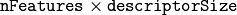

Feature Detection and Description¶
SIFT¶
-
class
SIFT: publicFeature2D¶
Class for extracting keypoints and computing descriptors using the Scale Invariant Feature Transform (SIFT) algorithm by D. Lowe [Lowe04].
| [Lowe04] | Lowe, D. G., “Distinctive Image Features from Scale-Invariant Keypoints”, International Journal of Computer Vision, 60, 2, pp. 91-110, 2004. |
SIFT::SIFT¶
The SIFT constructors.
-
C++:
SIFT::SIFT(int nfeatures=0, int nOctaveLayers=3, double contrastThreshold=0.04, double edgeThreshold=10, double sigma=1.6)¶ Parameters: - nfeatures – The number of best features to retain. The features are ranked by their scores (measured in SIFT algorithm as the local contrast)
- nOctaveLayers – The number of layers in each octave. 3 is the value used in D. Lowe paper. The number of octaves is computed automatically from the image resolution.
- contrastThreshold – The contrast threshold used to filter out weak features in semi-uniform (low-contrast) regions. The larger the threshold, the less features are produced by the detector.
- edgeThreshold – The threshold used to filter out edge-like features. Note that the its meaning is different from the contrastThreshold, i.e. the larger the
edgeThreshold, the less features are filtered out (more features are retained). - sigma – The sigma of the Gaussian applied to the input image at the octave #0. If your image is captured with a weak camera with soft lenses, you might want to reduce the number.
SIFT::operator ()¶
Extract features and computes their descriptors using SIFT algorithm
-
C++:
SIFT::operator()(InputArray img, InputArray mask, vector<KeyPoint>& keypoints, OutputArray descriptors, bool useProvidedKeypoints=false)¶ Parameters: - img – Input 8-bit grayscale image
- mask – Optional input mask that marks the regions where we should detect features.
- keypoints – The input/output vector of keypoints
- descriptors – The output matrix of descriptors. Pass
cv::noArray()if you do not need them. - useProvidedKeypoints – Boolean flag. If it is true, the keypoint detector is not run. Instead, the provided vector of keypoints is used and the algorithm just computes their descriptors.
SURF¶
-
class
SURF: publicFeature2D¶ Class for extracting Speeded Up Robust Features from an image [Bay06]. The class is derived from
CvSURFParamsstructure, which specifies the algorithm parameters:-
int
extended¶ - 0 means that the basic descriptors (64 elements each) shall be computed
- 1 means that the extended descriptors (128 elements each) shall be computed
-
int
upright¶ - 0 means that detector computes orientation of each feature.
- 1 means that the orientation is not computed (which is much, much faster). For example, if you match images from a stereo pair, or do image stitching, the matched features likely have very similar angles, and you can speed up feature extraction by setting
upright=1.
-
double
hessianThreshold¶ Threshold for the keypoint detector. Only features, whose hessian is larger than
hessianThresholdare retained by the detector. Therefore, the larger the value, the less keypoints you will get. A good default value could be from 300 to 500, depending from the image contrast.
-
int
nOctaves¶ The number of a gaussian pyramid octaves that the detector uses. It is set to 4 by default. If you want to get very large features, use the larger value. If you want just small features, decrease it.
-
int
nOctaveLayers¶ The number of images within each octave of a gaussian pyramid. It is set to 2 by default.
-
int
| [Bay06] | Bay, H. and Tuytelaars, T. and Van Gool, L. “SURF: Speeded Up Robust Features”, 9th European Conference on Computer Vision, 2006 |
Note
- An example using the SURF feature detector can be found at opencv_source_code/samples/cpp/generic_descriptor_match.cpp
- Another example using the SURF feature detector, extractor and matcher can be found at opencv_source_code/samples/cpp/matcher_simple.cpp
SURF::SURF¶
The SURF extractor constructors.
-
C++:
SURF::SURF()¶
-
C++:
SURF::SURF(double hessianThreshold, int nOctaves=4, int nOctaveLayers=2, bool extended=true, bool upright=false )¶
-
Python:
cv2.SURF([hessianThreshold[, nOctaves[, nOctaveLayers[, extended[, upright]]]]]) → <SURF object>¶ Parameters: - hessianThreshold – Threshold for hessian keypoint detector used in SURF.
- nOctaves – Number of pyramid octaves the keypoint detector will use.
- nOctaveLayers – Number of octave layers within each octave.
- extended – Extended descriptor flag (true - use extended 128-element descriptors; false - use 64-element descriptors).
- upright – Up-right or rotated features flag (true - do not compute orientation of features; false - compute orientation).
SURF::operator()¶
Detects keypoints and computes SURF descriptors for them.
-
C++:
SURF::operator()(InputArray img, InputArray mask, vector<KeyPoint>& keypoints)const¶
-
C++:
SURF::operator()(InputArray img, InputArray mask, vector<KeyPoint>& keypoints, OutputArray descriptors, bool useProvidedKeypoints=false)¶
-
Python:
cv2.SURF.detect(image[, mask]) → keypoints¶
-
Python:
cv2.SURF.detectAndCompute(image, mask[, descriptors[, useProvidedKeypoints]]) → keypoints, descriptors¶
-
C:
cvExtractSURF(const CvArr* image, const CvArr* mask, CvSeq** keypoints, CvSeq** descriptors, CvMemStorage* storage, CvSURFParams params)¶
-
Python:
cv.ExtractSURF(image, mask, storage, params)-> (keypoints, descriptors)¶ Parameters: - image – Input 8-bit grayscale image
- mask – Optional input mask that marks the regions where we should detect features.
- keypoints – The input/output vector of keypoints
- descriptors – The output matrix of descriptors. Pass
cv::noArray()if you do not need them. - useProvidedKeypoints – Boolean flag. If it is true, the keypoint detector is not run. Instead, the provided vector of keypoints is used and the algorithm just computes their descriptors.
- storage – Memory storage for the output keypoints and descriptors in OpenCV 1.x API.
- params – SURF algorithm parameters in OpenCV 1.x API.
The function is parallelized with the TBB library.
If you are using the C version, make sure you call cv::initModule_nonfree() from nonfree/nonfree.hpp.
gpu::SURF_GPU¶
-
class
gpu::SURF_GPU¶
Class used for extracting Speeded Up Robust Features (SURF) from an image.
class SURF_GPU
{
public:
enum KeypointLayout
{
X_ROW = 0,
Y_ROW,
LAPLACIAN_ROW,
OCTAVE_ROW,
SIZE_ROW,
ANGLE_ROW,
HESSIAN_ROW,
ROWS_COUNT
};
//! the default constructor
SURF_GPU();
//! the full constructor taking all the necessary parameters
explicit SURF_GPU(double _hessianThreshold, int _nOctaves=4,
int _nOctaveLayers=2, bool _extended=false, float _keypointsRatio=0.01f);
//! returns the descriptor size in float's (64 or 128)
int descriptorSize() const;
//! upload host keypoints to device memory
void uploadKeypoints(const vector<KeyPoint>& keypoints,
GpuMat& keypointsGPU);
//! download keypoints from device to host memory
void downloadKeypoints(const GpuMat& keypointsGPU,
vector<KeyPoint>& keypoints);
//! download descriptors from device to host memory
void downloadDescriptors(const GpuMat& descriptorsGPU,
vector<float>& descriptors);
void operator()(const GpuMat& img, const GpuMat& mask,
GpuMat& keypoints);
void operator()(const GpuMat& img, const GpuMat& mask,
GpuMat& keypoints, GpuMat& descriptors,
bool useProvidedKeypoints = false,
bool calcOrientation = true);
void operator()(const GpuMat& img, const GpuMat& mask,
std::vector<KeyPoint>& keypoints);
void operator()(const GpuMat& img, const GpuMat& mask,
std::vector<KeyPoint>& keypoints, GpuMat& descriptors,
bool useProvidedKeypoints = false,
bool calcOrientation = true);
void operator()(const GpuMat& img, const GpuMat& mask,
std::vector<KeyPoint>& keypoints,
std::vector<float>& descriptors,
bool useProvidedKeypoints = false,
bool calcOrientation = true);
void releaseMemory();
// SURF parameters
double hessianThreshold;
int nOctaves;
int nOctaveLayers;
bool extended;
bool upright;
//! max keypoints = keypointsRatio * img.size().area()
float keypointsRatio;
GpuMat sum, mask1, maskSum, intBuffer;
GpuMat det, trace;
GpuMat maxPosBuffer;
};
The class SURF_GPU implements Speeded Up Robust Features descriptor. There is a fast multi-scale Hessian keypoint detector that can be used to find the keypoints (which is the default option). But the descriptors can also be computed for the user-specified keypoints. Only 8-bit grayscale images are supported.
The class SURF_GPU can store results in the GPU and CPU memory. It provides functions to convert results between CPU and GPU version ( uploadKeypoints, downloadKeypoints, downloadDescriptors ). The format of CPU results is the same as SURF results. GPU results are stored in GpuMat. The keypoints matrix is  matrix with the CV_32FC1 type.
keypoints.ptr<float>(X_ROW)[i]contains x coordinate of the i-th feature.keypoints.ptr<float>(Y_ROW)[i]contains y coordinate of the i-th feature.keypoints.ptr<float>(LAPLACIAN_ROW)[i]contains the laplacian sign of the i-th feature.keypoints.ptr<float>(OCTAVE_ROW)[i]contains the octave of the i-th feature.keypoints.ptr<float>(SIZE_ROW)[i]contains the size of the i-th feature.keypoints.ptr<float>(ANGLE_ROW)[i]contain orientation of the i-th feature.keypoints.ptr<float>(HESSIAN_ROW)[i]contains the response of the i-th feature.
The descriptors matrix is  matrix with the CV_32FC1 type.
The class SURF_GPU uses some buffers and provides access to it. All buffers can be safely released between function calls.
See also
Note
- An example for using the SURF keypoint matcher on GPU can be found at opencv_source_code/samples/gpu/surf_keypoint_matcher.cpp
ocl::SURF_OCL¶
-
class
ocl::SURF_OCL: publicFeature2D¶
Class used for extracting Speeded Up Robust Features (SURF) from an image.
class SURF_OCL
{
public:
enum KeypointLayout
{
X_ROW = 0,
Y_ROW,
LAPLACIAN_ROW,
OCTAVE_ROW,
SIZE_ROW,
ANGLE_ROW,
HESSIAN_ROW,
ROWS_COUNT
};
//! the default constructor
SURF_OCL();
//! the full constructor taking all the necessary parameters
explicit SURF_OCL(double _hessianThreshold, int _nOctaves=4,
int _nOctaveLayers=2, bool _extended=false, float _keypointsRatio=0.01f, bool _upright = false);
//! returns the descriptor size in float's (64 or 128)
int descriptorSize() const;
//! upload host keypoints to device memory
void uploadKeypoints(const vector<KeyPoint>& keypoints,
oclMat& keypointsocl);
//! download keypoints from device to host memory
void downloadKeypoints(const oclMat& keypointsocl,
vector<KeyPoint>& keypoints);
//! download descriptors from device to host memory
void downloadDescriptors(const oclMat& descriptorsocl,
vector<float>& descriptors);
void operator()(const oclMat& img, const oclMat& mask,
oclMat& keypoints);
void operator()(const oclMat& img, const oclMat& mask,
oclMat& keypoints, oclMat& descriptors,
bool useProvidedKeypoints = false);
void operator()(const oclMat& img, const oclMat& mask,
std::vector<KeyPoint>& keypoints);
void operator()(const oclMat& img, const oclMat& mask,
std::vector<KeyPoint>& keypoints, oclMat& descriptors,
bool useProvidedKeypoints = false);
void operator()(const oclMat& img, const oclMat& mask,
std::vector<KeyPoint>& keypoints,
std::vector<float>& descriptors,
bool useProvidedKeypoints = false);
void releaseMemory();
// SURF parameters
double hessianThreshold;
int nOctaves;
int nOctaveLayers;
bool extended;
bool upright;
//! max keypoints = min(keypointsRatio * img.size().area(), 65535)
float keypointsRatio;
oclMat sum, mask1, maskSum, intBuffer;
oclMat det, trace;
oclMat maxPosBuffer;
};
The class SURF_OCL implements Speeded Up Robust Features descriptor. There is a fast multi-scale Hessian keypoint detector that can be used to find the keypoints (which is the default option). But the descriptors can also be computed for the user-specified keypoints. Only 8-bit grayscale images are supported.
The class SURF_OCL can store results in the GPU and CPU memory. It provides functions to convert results between CPU and GPU version ( uploadKeypoints, downloadKeypoints, downloadDescriptors ). The format of CPU results is the same as SURF results. GPU results are stored in oclMat. The keypoints matrix is matrix with the CV_32FC1 type.
keypoints.ptr<float>(X_ROW)[i]contains x coordinate of the i-th feature.keypoints.ptr<float>(Y_ROW)[i]contains y coordinate of the i-th feature.keypoints.ptr<float>(LAPLACIAN_ROW)[i]contains the laplacian sign of the i-th feature.keypoints.ptr<float>(OCTAVE_ROW)[i]contains the octave of the i-th feature.keypoints.ptr<float>(SIZE_ROW)[i]contains the size of the i-th feature.keypoints.ptr<float>(ANGLE_ROW)[i]contain orientation of the i-th feature.keypoints.ptr<float>(HESSIAN_ROW)[i]contains the response of the i-th feature.
The descriptors matrix is matrix with the CV_32FC1 type.
The class SURF_OCL uses some buffers and provides access to it. All buffers can be safely released between function calls.
See also
Note
- OCL : An example of the SURF detector can be found at opencv_source_code/samples/ocl/surf_matcher.cpp
Help and Feedback
You did not find what you were looking for?- Ask a question on the Q&A forum.
- If you think something is missing or wrong in the documentation, please file a bug report.